Lab 4 - Exploring Jaeger
Lab Goal
This lab walks you through querying, viewing and comparing trace visualizations with Jaeger.
Exploring Jaeger - Choose your runtime
This lab explores the Jaeger UI backed by the demo application sending it traces. Choose how
that workload is running:
- Continue onwards with the application running under Podman
- Continue using Kubernetes (k3s)
Exploring Jaeger - Podman prerequisites
This path explores the Jaeger UI served from a pod running under
Podman. Start the
hello-otel
pod, then confirm it is up. If podman pod ps already lists it as
Running, skip the first command:
$ podman play kube programmatic/app_pod.yaml
$ podman pod ps
POD ID NAME STATUS CREATED INFRA ID # OF CONTAINERS
6bc7de63cbe3 hello-otel Running 21 seconds ago 11430dfc0823 3
Exploring Jaeger - Generate some trace data
Jaeger has nothing to show until the application is exercised. Open a second terminal or a
browser and hit each of these routes a few times to fill Jaeger with traces:
Exploring Jaeger - Verify the Jaeger UI
Open browser to http://localhost:16686.
You should see a screen like below with a Gopher detective:

Exploring Jaeger - tooling overview
Jaeger is an open source distributed tracing system and CNCF graduated project that
supports multiple storage backends and a web interface. This workshop uses Jaeger
v1.76.0, the current release of the v1 line.
Exploring Jaeger - Unpacking the all-in-one
Jaeger natively supports receiving telemetry via OTLP, the OpenTelemetry Protocol which is
powering our examples and instead of a storage backend we're storing trace data in-memory:
- jaeger-collector:
- receives, processes, and sends traces to storage
- jaeger-query:
- exposes APIs for retrieving traces from storage
- hosts a web UI.
Exploring Jaeger - Searching through traces
The first page you land on in Jaeger is the Traces page with a search panel. This is where you
can filter to look at traces with a specific service, a particular operation, relevant tags
(e.g. status http.status_code=500), duration or any combination of the above:
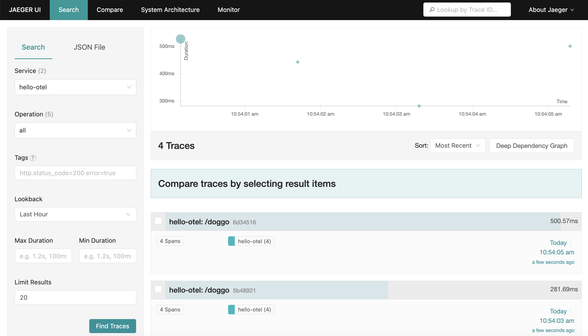
Exploring Jaeger - Exploring search results
Traces matching the search query populate a scatter plot and a table. The scatter plot is a
quick way to visually identify traces that look out of the ordinary and by clicking on the
bubble you'll be taken straight to the corresponding trace waterfall. The table view is helpful
for sorting to find specific traces by duration, amount of spans or recency:
Exploring Jaeger - More trace details
Traces can feature 100s of services and 1000s of spans so the default view is to have all span
details collapsed to show the fullest picture of the request with quick stats about the trace
like duration and number of services. From this view you can see what spans are taking up the
most time relative to the overall request duration:
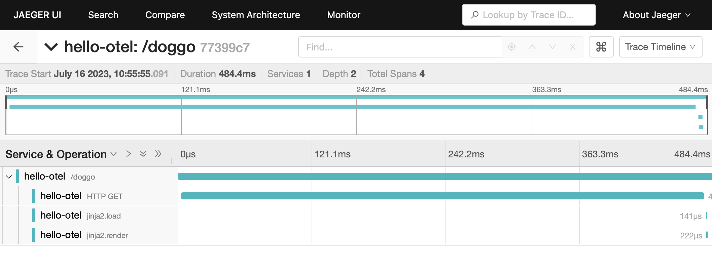
Exploring Jaeger - Search bar for trace details
The search bar allows you to search within the trace for spans with properties like "GET", "200", etc. clicking the target opens up
the matching spans:
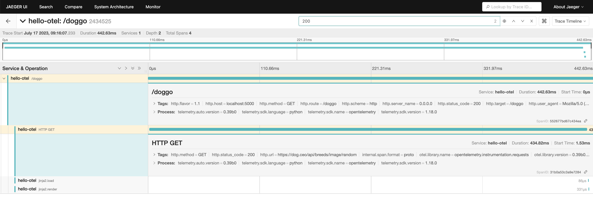
Exploring Jaeger - A trace scatter plot
The scatter plot is a quick way to visually identify traces that look out of the ordinary and
by clicking on the bubble you'll be taken straight to the corresponding trace waterfall. The
table view is helpful for sorting to find specific traces by duration, amount of spans or
recency:
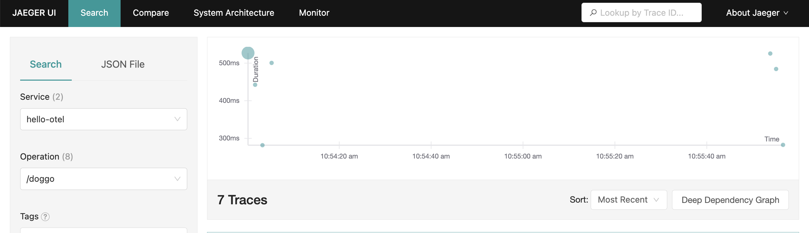
Exploring Jaeger - Leveraging a trace table
The table view is helpful for sorting to find specific traces by duration, amount of spans or
recency. Clicking on the trace name takes you to its trace waterfall page and selecting 2 or
more checkboxes lets you compare the selected traces with each other:
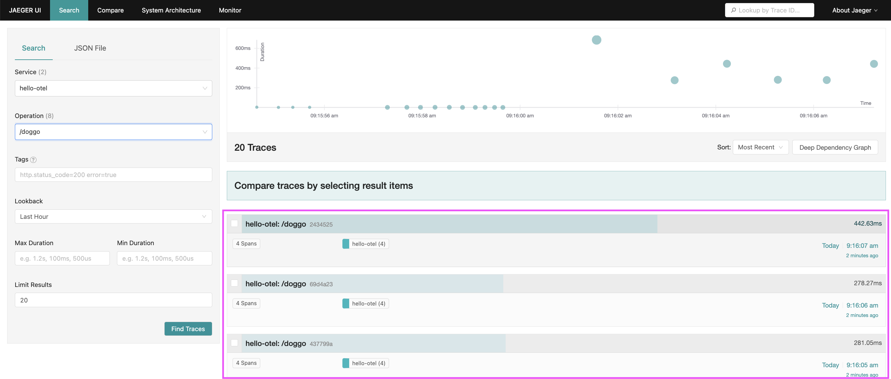
Exploring Jaeger - A single span
When you've zeroed in on an "interesting" span, clicking the name opens up more details like the
associated tags and process information. This is where your manually instrumented metadata
becomes powerful way to inspect your system behavior:
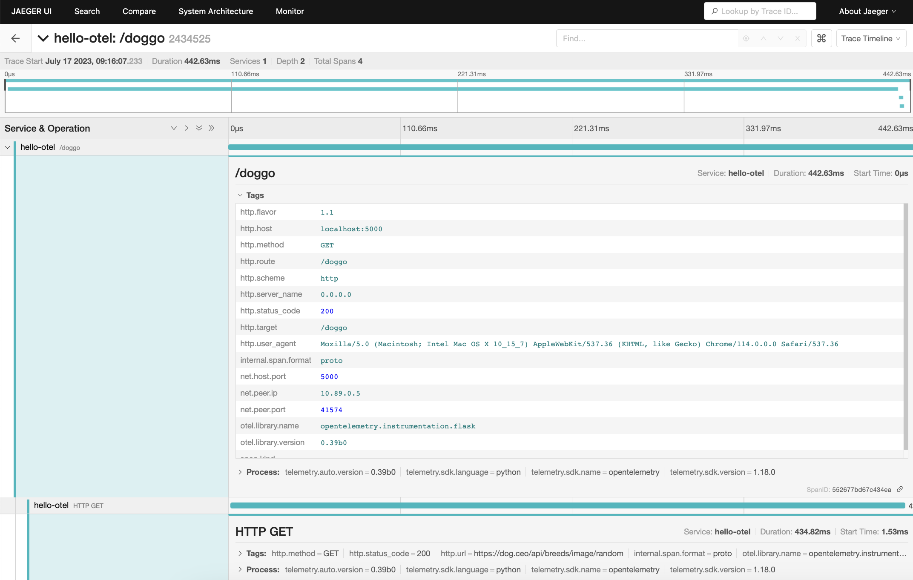
Exploring Jaeger - Additional trace visualizations
Other helpful trace visualizations are found in the drop-down next to the trace search bar they
include:
- Graph
- Spans Table
- Flamegraph
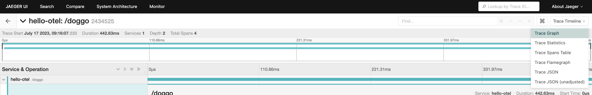
Exploring Jaeger - The graph view
The graph view shows the trace with spans groups into node blocks with options to color the
nodes uniquely by service, by Time to highlight the critical path, or Self Time which shows the
longest span durations not waiting on children:
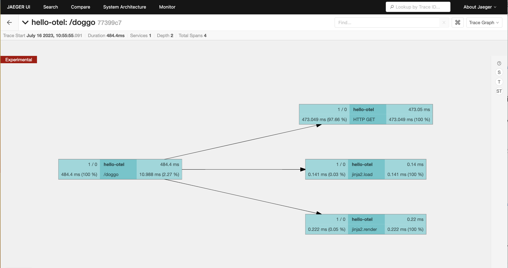
Exploring Jaeger - The spans table
This view shows a table with duration, operation and service name per span in the trace. The
option to search by service or operation lets you hone in on specific interactions. Clicking a
span ID takes you the Trace Detail view with that span highlighted:
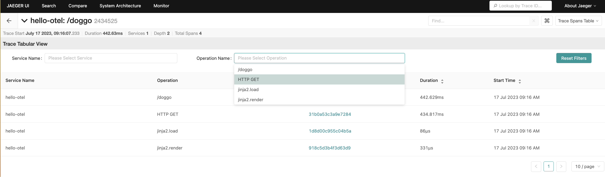
Exploring Jaeger - The flamegraph view
Flamegraph is another way to visualize the trace waterfall, as you explore the spans you can
right-click to collapse unnecessary details, copy the function name to use in another query or
highlight similar spans within the trace:
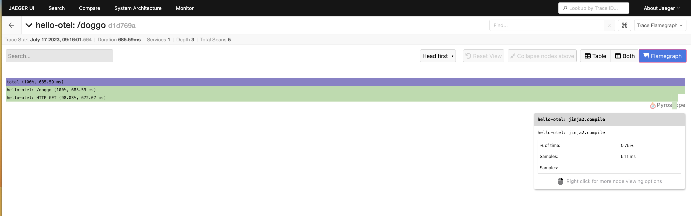
Exploring Jaeger - Comparing traces for change
When new bugs pop up or unexpected behavior your investigation typically is trying to answer,
"What changed?" or "How does this compare to normal?" This is where trace comparison shines! Use
this to compare two or more traces to quickly identify which spans are present or occur more
frequently in only one of the traces.
Why did one request to `/doggo` take 685ms and another only 281ms?
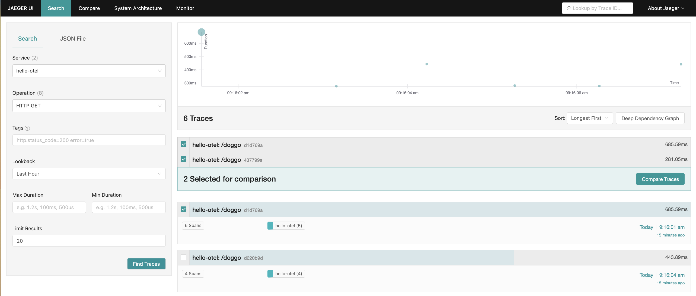
Exploring Jaeger - Trace comparison in detail
Colors are modeled after code diffs:
Looks like the culprit is compiling the jinja template which is only done on the first time a page is loaded!
- Gray for nodes in both Trace A and Trace B
- Red for nodes only in Trace A
- Green for nodes only in Trace B
Looks like the culprit is compiling the jinja template which is only done on the first time a page is loaded!
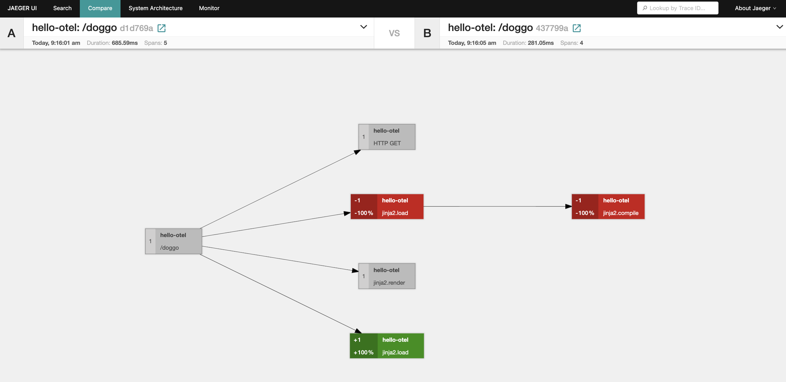
Exploring Jaeger - Why so many visualizations?
Trace data powers both high level insights into relationships between services and low level insights.
It would be overwhelming to show all of that information in one view, and it's the ability to jump between trace comparisons,
span queries, individual attributes on method calls and topology maps that make trace data flexible and powerful.
Exploring Jaeger - Stop the pod
$ podman play kube programmatic/app_pod.yaml --down
Lab completed - Results
We reviewed trace visualization and analysis options in the Jaeger UI.
Next up, manually instrumenting metadata on spans.